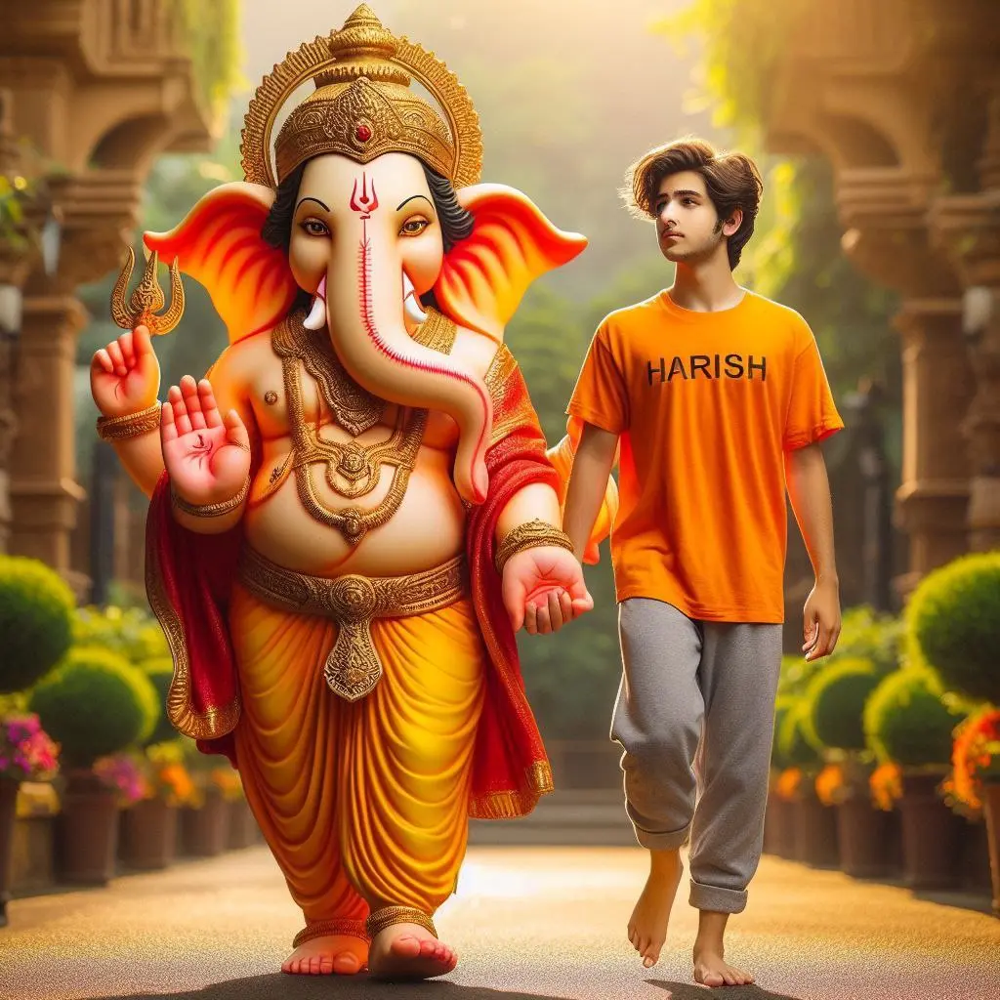

What’s up guys! As a proud Indian boy, I’m super excited to share some dope AI photo editing prompts revolving around our beloved Ganpati Bapa.
With the rise of AI image generators like Bing Image Creator, we can now manifest our wildest imaginations into stunning visuals. And what better way to celebrate our faith than by creating personalized AI photos of ourselves with the awesome Lord Ganesha!
For all my Hindu homies out there, I’ve curated a list of descriptive prompts that will let you summon hyper-realistic, ultra-clear images of you and Ganpati Bapa together.
These prompts are designed to capture the divine essence of the Lord while incorporating your name on a dope T-shirt you’ll be rocking in the AI photo. Get ready to channel your inner artist and bring these prompts to life!
Prompt for Boys
Want more awesome prompts?
Join our community and get the latest viral prompts daily.
Follow on Instagram
Prompt for Girls
To use these prompts, simply replace ‘YOUR NAME’ with your actual name, and feed the prompt into the Bing Image Creator. Within moments, you’ll have a breathtaking AI-generated photo of you and the divine Ganpati Bapa, personalized with your name emblazoned on your clothing.
These AI photos make for incredible profile pictures, wallpapers, or even framed artworks to adorn your home. Imagine the awe and blessings you’ll receive when your friends and family lay their eyes on these stunning visuals, where you’re walking hand-in-hand with the remover of obstacles himself!
But wait, there’s more! You can tweak and experiment with these prompts to create endless variations. Change the scenery, add props, adjust the expressions – the possibilities are limitless. Just make sure to keep the core elements intact, like your name on the clothing and the presence of Lord Ganesha, for that personal touch.
Conclusion
So, what are you waiting for, guys? Fire up that Bing Image Creator and manifest your devotion to Ganpati Bapa through these prompts. Bask in the divine grace as you immortalize your bond with the elephant-headed deity in these AI-generated masterpieces.
Remember, with AI image generation, your imagination is the only limit. So, let your creativity flow, and may Lord Ganesha bless you with abundance, prosperity, and the ability to overcome any obstacles that come your way!
Ganpati Bappa Morya!